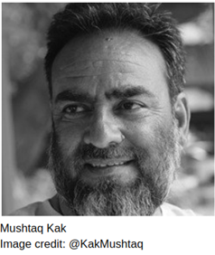

“We are always acting in our lives accordingly as circumstances change” - Mushtaq Kak
We, students of IIT Jammu, were very fortunate to have learnt about theatre from one of the renowned names in this field, Mr Mushtaq Kak. He agreed to give us his precious time to know more about him, and we did not let this opportunity slide.
In our interview with Mr. Kak, he discusses his journey, tells us about some of his great works and the current state of drama and arts in our country. Drama, he believes, has a lot of power to inspire and unite people. But there are problems too and he therefore asks the youngsters who are following theatre as their career to have courage, it is not going to be an easy journey.
Interview with Mr. Mustaq Kak
 What prompted you to join theatre as an actor and a director?This starts as a hobby when I was in school when cultural programs would take place. From there I started to find ways, which path should I choose ? Who will help me to reach there? It was my school teacher who introduced me to a drama artist, who would become my guruji, Ratan Kalsi ji. He is a radiance. From there work of theatre started . My first priority was an actor, not a director. But in my group there was no director so I got the opportunity to direct the play which was a super flop , and I became a director.
You are very vocal about the crisis prevalent in the conflict-torn region of Kashmir. Can you comment on the situation?I am involved with the fall out of crisis. Conflict can be a political one. It can have other explanations as well.
Consequences are social and human. The loss of human life causes untold suffering. Some sections of society become more vulnerable. They need attention, protection and care. There comes the role of the society.
Ishq Malangi is based on Khalid Hassan's two Punjabi stories. It is the story of two ladies who are entertainers. The first is a young lady who takes pride in her looks and is after money. She wants to earn as much as she can in her prime time.
There was a horse cart driver who falls in love with her but she snubs her, saying millionaires are after her, why would she marry him.
The other lady, who also sings in the brothel, one day hears a Fakir sing. She is so influenced by the music that she quits and becomes a sufi saint.So it shows that every person has a different love.
I have worked in films like Hijack, Sikandar, I am Megha, MS Dhoni, Dhishoom, Mausam, Vishwaroopam part 1&2, Kesri, Raw. I am also currently working on some web series .
Journalism is under threat during current times. There is backlash, death threats and even assassinations. Please comment on this scenario.I do not agree that journalism is under any threat. I also do not subscribe to your assertion of backlash, death, threats etc in journalism, I believe, is evolving and accepting now, than ever before, that there is no scope for sensationalising the issues at the cost of national pride and integrity.
Journalism also finds its expression through social media now. It is, therefore, difficult to present any view which lacks the support of the facts.
People want the factual position before position to be placed before them in the right and positive manner. People want journalism not jingoism in the name of journalism. They want facts to be placed before them as they are and as they exist. They do not like any distortions.
As the people have now access to the real time information through alternate sources as well enabling cross checks, journalism needs to learn to accommodate all the divergent views on an issue rather than feeding their readers or viewers with distorted and piecemeal information.
In India, encouraging of theatre art is happening on a large scale, there are many schemes for theatre created by our Govt, like in this scholarships, fellowships and production grands are been given. The difference is that some people know about it, some don't . So a little problem is seen in communication.
Though the status has greatly improved and is constantly becoming better but it has not yet developed up to the level of what it should have. Quantity is there, but we are lacking quality. There is lack of awareness among people. People here do not have that sense of questioning. They are doing acts but do not know why are they doing drama.They do not know its importance.
Choosing a career is not an easy task. You guys came to an IIT , you will get a job somewhere, but this does not happen in theatre. In our occupation we need to prove every single day that we are good actors, directors. We need to dig the well, draw water and drink regularly.
Please tell us about folk theatre in Jammu And Kashmir.Folk theatre of Kashmir is Bhand Pather. This is a sanskrit word. ‘Pather’ means drama. It is being told in Dogri in Jammu theatre called Bhaktiyaan , whose some portion we got from Himachal. Kariyala folk form it is this type of folk form. But the theatre of Jammu is not that prominent in comparison of folk form of Kasmir Bhand Pather.
In what ways have you tried to promote theatre in Jammu and Kashmir?I have worked in Shri Ram Centre for Performing Arts as a director and have gone to teach in different acting institutions. I gradually realised that my dream was to start an acting school in my own state J&K. But I have ultimately discovered that people here in J&K do not have that mindset, maybe because we don’t have a cultural policy here in Jammu and Kashmir.
What is your approach to promote the dramas you direct among common people?Earlier we used posters, slowly we shifted to postcards. Now a days social media has come to the picture. But these platforms have a striking disadvantage. What happens is that we release an attractive teaser for marketing purpose, people show up in numbers with great expectations but if the act proves out to be a flop,and the audience, especially those who have been to a drama for the first time develop a wrong notion about dramas. Most of them do not show up for the second time.
You are undoubtedly an icon. Don’t you think you should promote your work to get wider viewership?I will tell you something. Once we decided to test ourselves. So we worked upon a play, but did not promote it at all, on any kind of media. We just rehearsed and started at 6”o clock.
But we found people standing outside the theatre.The information had somehow reached them. I had not invited anyone. There was a total strength of about 120 without invitation. They were the real lovers of theatre
Yes, definitely. Even during the independence days, drama was used to unify people. Many acts were based on the theme of peace and non violence. Some were based on making people realize the horrors of war, etc.
How do you think theatre helped during freedom struggle to attain independence?Theatre in the form of nukkad nataks, with a blend of different folk forms was used to make people aware of the ongoing freedom struggle. For example, the song "Uth Jaag Musafir" was sung in rallies to inspire people to fight for their rights. Theatre helped to ignite rebellions against the British government in many provinces of India.
Yes only at the time of death when a person is breathing his last breaths, restricted on a bed because of his deteriorating health.
What meaning do you wish to convey through your work?(laughs) This is a very bookish question. I am not here to teach anyone a lesson. No one is going to change just by watching my plays.
As an example, crores of rupees has been spent on the advertisement of Swachh Bharat Abhiyan, family planning, lots of plays, banners and hoardings, with 0 outcome. Have people changed, No.
Yes, definitely. Even during the independence days, drama was used to unify people. Many acts were based on the theme of peace and non violence. Some were based on making people realize the horrors of war, etc.
Then according to you the main purpose of drama is Entertainment?No not exactly. The main purpose is to provide a platform from where your views can be presented to the public. This doesn't mean that I don't have commitment for the society. It's just that, I don't have the showing off or slogan type of commitment.
So you are not trying to prove anything?Yes exactly.
What message would you like to give to the new youngsters who are wishing to join drama?They must ask themselves why do they want to join drama because there is a lot of struggle associated with it and one needs courage to pursue it as a career. Life in theatre can sometimes be very insecure, so one must have a strong driving force to steer him or her through the toughest parts of this journey.
This interview was made possible under the guidance of my Professor, Dr. Quleen Kaur Bijral-HOD humanities department, IIT Jammu.
Columnist: Vaidehi Som
Interviewers: Ayush Shrivastave, Shailja Sharma, Abhishek Keshari, Vineet Bakshi, students, IIT Jammu